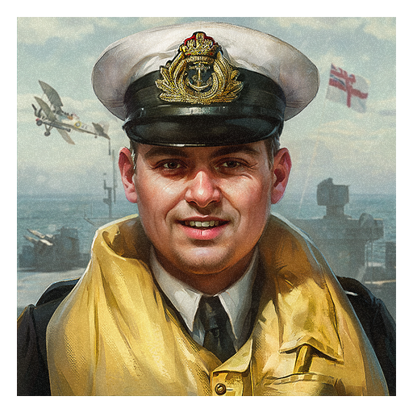

En este mes de "Páginas de Historia", estarás en el centro de los eventos que tomaron lugar en diferentes teatros en la guerra. Muchas batallas importantes, como el fin de la Segunda Guerra Mundial, al igual que las grandes batallas en el Oriente Medio.
Eugene Esmond fue un piloto de la flota aérea durante la Segunda Guerra Mundial. Obtuvo la Orden de Servicios Distinguidos por su participación en el ataque al acorazado alemán Bismarck. En el 12 de febrero de 1942, guió a un escuadrón torpedero en contra del gran defendido confoy alemán atravesando el Estrecho de Dover como parte de la operación Cerberus. Sin forma de cubrirse, continuó atacando bajo fuerte ataque enemigo. Su escuadrón entero acabó destruido y el propio Esmond murió.
Puedes adquirir esta foto de perfil con Águilas Doradas hasta el 3 de Marzo, 11:30GMT sin completar tareas.
1 de febrero - 4 de febrero: Batalla de Manila
En el 3 de febrero de 1945 comenzó la batalla de Manila, en la capital de Filipinas. Les llevó un mes a las Fuerzas Superiores de América el liberar la ciudad de tropas japonesas, las cuales lucharon hasta el final. Para los americanos, estas fueron las batallas urbanas más feroces en el océano Pacífico
4 de febrero - 7 de febrero: Batalla de la caja del Admin
Al principio de 1944, hubieron muchas batallas en la frontera entre la zona ocupada por japoneses en Burma y los británicos en India. Por parte de un ataque japonés, los británicos fueron rodeados, pero fueron rápidos en construir una defensa alrededor de la zona administrativa (y por ello la zona se llamó Caja del Admin o en inglés "Admin Box"). Gracias a la presencia de tanques y ayudas continuas desde el aire, los Aliados consiguieron aguantar durante 18 días hasta que los japoneses fueron obligados a retirarse.
8 de febrero - 11 de febrero: Lan Som 719
Desde el 8 de febrero hasta el 25 de marzo de 1971, las tropas del sur de Vietnam, cubriéndose de artillería y las Fueras Aéreas Americanas, llevaron a cabo una operación en Laos para derrotar a las fuerzas del norte de Vietnam. La operación acabó fallando: las tropas del norte continuaron usando las rutas de suministros a través de Laos, y la pérdida de helicópteros americanos excedieron las 100
11 de febrero - 14 de febreo: Operación Cerberus
Del 11 de Febrero al 13 de Febrero de 1942, tuvo lugar una operación para trasladar los acorazados Alemanes Scharnhorst y Gneisenau y el crucero pesado Prinz Eugen desde Brest, en el oeste de Francia, a Alemania. Los intentos Británicos de interceptar el convoy se hicieron precipitadamente: los bombarderos no recibieron suficiente cobertura y sufrieron grandes pérdidas sin causar daños a los barcos. Alemania logró sus objetivos.
15 de febrero - 18 de febrero: Ofensiva de Narva
En la segunda mitad de Febrero de 1944, el Grupo de Ejércitos Norte intentó con éxito detener el avance de las tropas Soviéticas hacia Estonia. Las fuerzas reforzadas de la Wehrmacht repelieron con éxito el avance del Ejército Rojo y le infligieron enormes pérdidas. La URSS no consiguió tomar Narva hasta finales de Julio.